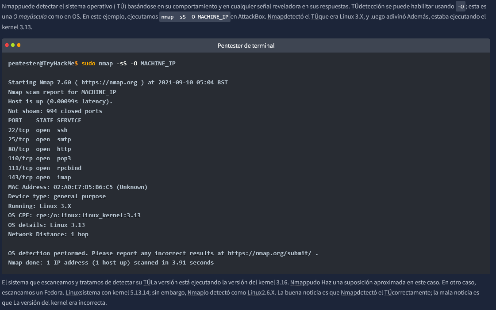
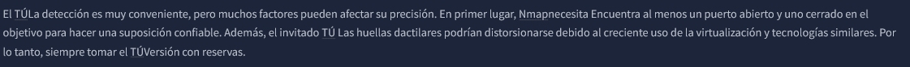
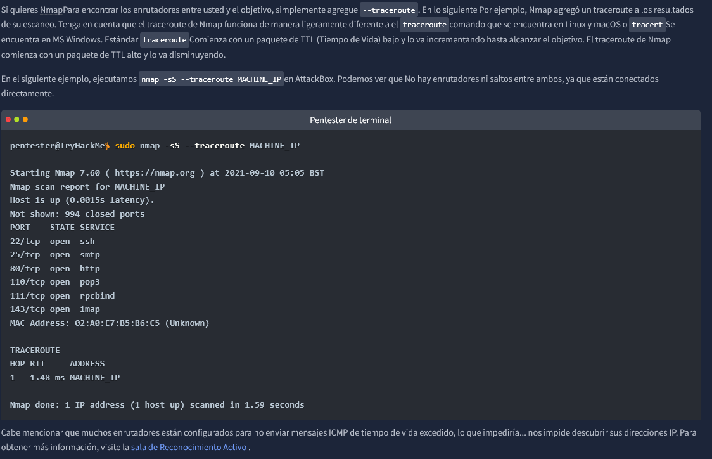

System Operative


------------------------------------------------------------------------------------------------------------------------------------------------------------------------------------------------
Traceroute
